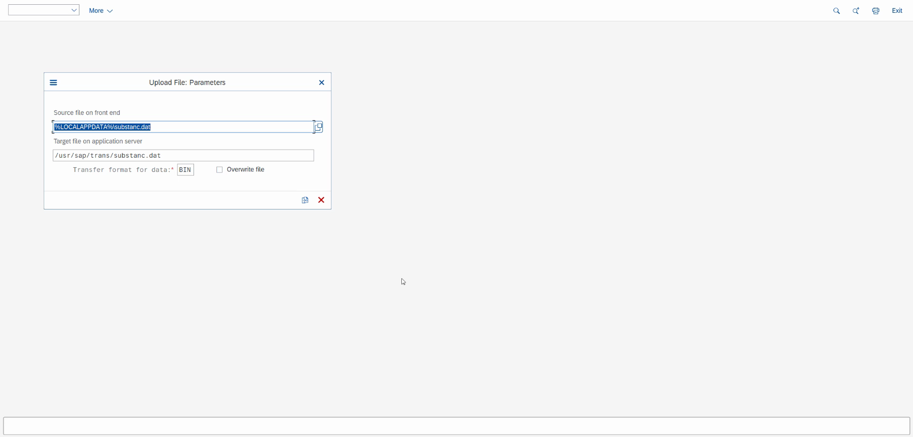
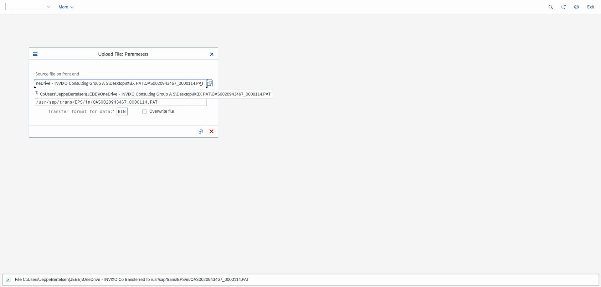
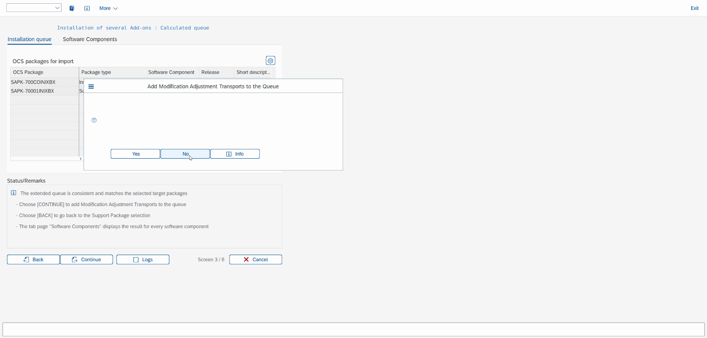
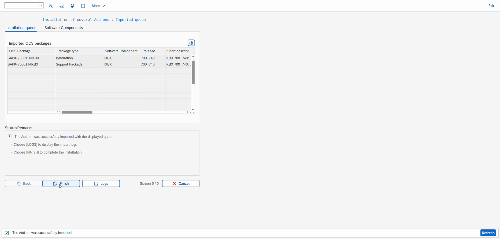
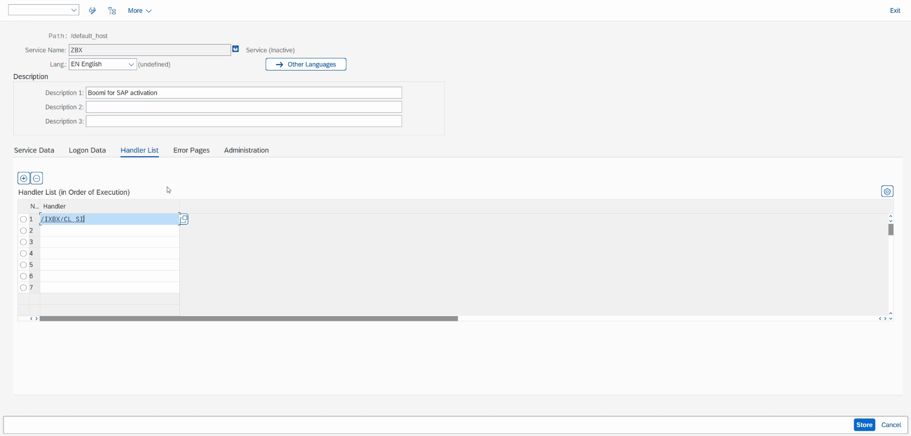
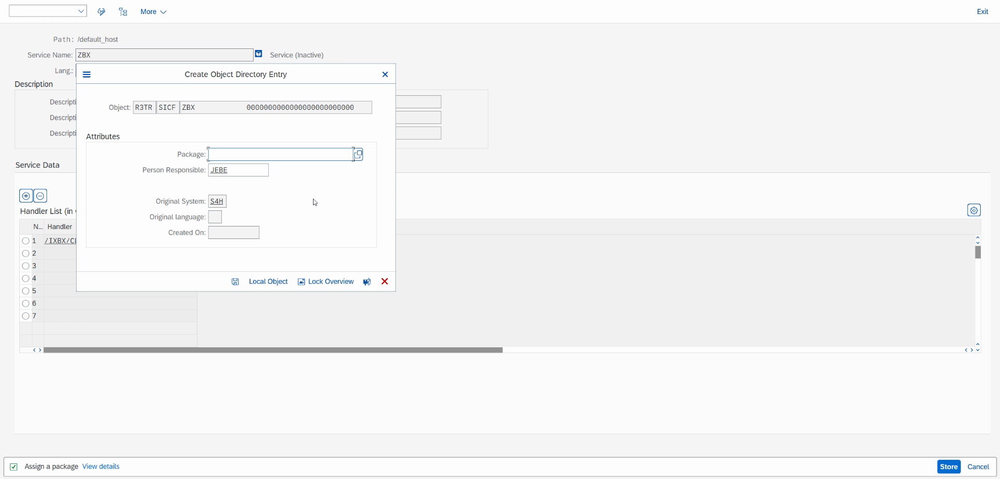
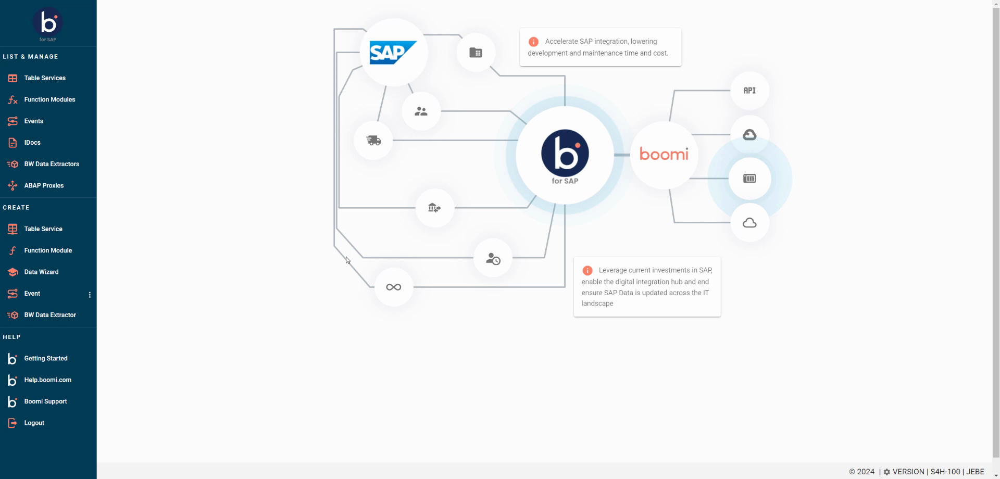
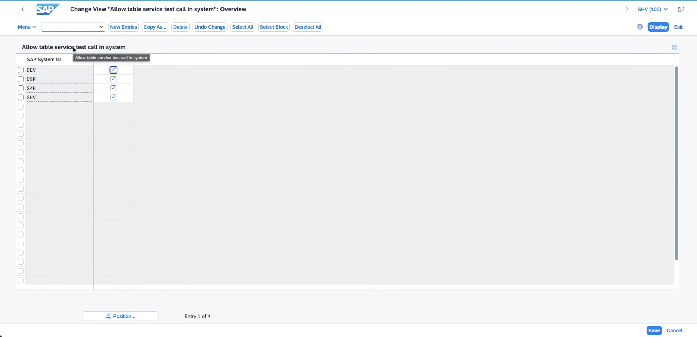
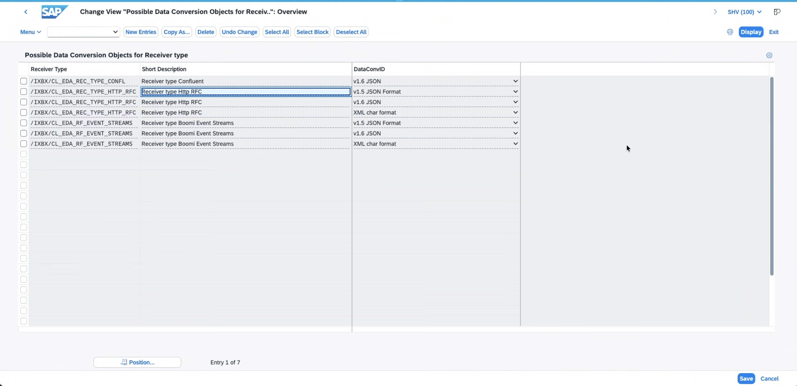

Installing Boomi for SAP
Before you build, understand what Boomi for SAP is, why it matters, and how it gets installed into an SAP system.
Your lab environment already has Boomi for SAP installed and running. This optional walkthrough is a guided click-through so you understand what's under the hood — installing the add-on is normally a one-time task handled by an SAP Basis administrator. Click Next to advance; you won't perform any of these steps yourself.
Why Boomi for SAP
SAP is the system of record for the enterprise — orders, materials, customers, financials. The hard part has never been the data; it's getting to it cleanly. Traditional approaches bolt an external connector onto SAP and reach in from the outside, or require custom ABAP development gated behind transport requests and developer queues.
Boomi for SAP takes a different approach: it's an SAP-certified add-on that runs natively inside the SAP system. A drag-and-drop UI — served directly from SAP — lets you expose SAP data and processes as clean, reusable services that the wider Boomi platform can consume. No middleware to scrape data from the outside, and no custom ABAP to write.
What makes it different
Runs inside SAP
A certified ABAP add-on installed in the SAP system itself — not an external connector reaching in. It uses SAP's own security, authorizations, and user model.
No custom ABAP
Expose tables, function modules, and events through a UI. Integration teams stop waiting on developer transports to get at SAP data.
Real-time and batch
Table Services for structured extraction and Business Object Events for real-time change notifications — from one tool, in one place.
Governed and catalogued
Every service you publish is named, listed, and reusable — a governed catalogue of SAP capabilities rather than one-off point integrations.
What it exposes
Once installed, Boomi for SAP can surface SAP capabilities as services the Boomi platform consumes:
What the installation covers
Installing the add-on (transport code IXBX 700_740) is four phases inside SAP, followed by a short post-install configuration pass and a matching setup on the Boomi platform side. The rest of this walkthrough steps through each one:
Prerequisites & Required Files
What a Basis admin needs on hand before starting the install.
Required access
- SAP user with Basis / add-on installation rights (SAINT authorization)
- Access to CG3Z — Upload File to Application Server
- Access to SAINT — SAP Add-On Installation Tool
- Access to SICF — Maintain Services
- The IXBX package files from Boomi Support or the SAP Marketplace
- The installation password from SAP Note 567695
Package files required
| File | Target path on server |
|---|---|
substanc.dat | /usr/sap/trans/substanc.dat |
QAS…0000114.PAT | /usr/sap/trans/EPS/in/…114.PAT |
QAS…0000115.PAT | /usr/sap/trans/EPS/in/…115.PAT |
QAS…0000119.PAT | /usr/sap/trans/EPS/in/…119.PAT |
/usr/sap/trans/EPS/in/ exists and is writable by the <sid>adm OS user before uploading.Upload Transport Files to the Application Server
T-Code CG3Z — push each package file from the local machine to the SAP server so SAINT can detect them.
- 1
Open CG3Z — Enter CG3Z in the transaction field and press Enter. The Upload File: Parameters dialog opens.
- 2
Upload
substanc.datfirst — Set Source file to%LOCALAPPDATA%\substanc.dat, Target to/usr/sap/trans/substanc.dat, format BIN. Click the Transfer (floppy disk) icon. - 3
Upload the three .PAT files — Repeat CG3Z for each. Target path for all three:
/usr/sap/trans/EPS/in/<filename>.PAT, in order: 0000114 → 0000115 → 0000119.
| # | Source filename | Target server path |
|---|---|---|
| 1 | substanc.dat | /usr/sap/trans/substanc.dat |
| 2 | QAS…_0000114.PAT | /usr/sap/trans/EPS/in/…114.PAT |
| 3 | QAS…_0000115.PAT | /usr/sap/trans/EPS/in/…115.PAT |
| 4 | QAS…_0000119.PAT | /usr/sap/trans/EPS/in/…119.PAT |


Install the Add-On via SAINT
T-Code SAINT — a six-screen wizard that selects the package, calculates the queue, takes the password, and imports.
- 1
Open SAINT — Enter SAINT and run. The tool scans the inbox; verify all three OCS packages show result code 0004 — "OCS file already exists in inbox."
- 2
Select the package (Screen 1/6) — Check IXBX 700_740: Add-On Installation and click Continue.
- 3
Review the calculated queue (Screen 3/6) — Confirm both packages appear:
SAPK-700COINIXBX(Installation) andSAPK-70001INIXBX(Support Package). Status reads "The extended queue is consistent." Click Continue. - 4
Enter the installation password (Screen 5/6) — In the SAINT: Password request dialog, enter the password from SAP Note 567695 for both packages, then click the green checkmark.
- 5
Wait for the import — SAINT runs the queue ("10%: tp successfully connected", "CHECK_REQUIREMENTS is being executed…"). Do not cancel — this takes several minutes.
- 6
Finish (Screen 6/6) — On completion the runtime analysis dialog confirms "The import of the OCS queue was successfully finished!" Choose Do not send, then click Finish.


Create and Activate the ZBX ICF Service
T-Code SICF — the Boomi for SAP UI is served through an SAP ICF service. Create the ZBX node, register the handler class, and activate it.
- 1
Open SICF — Enter SICF, ensure Hierarchy Type is
SERVICE, and press F8 (Execute) to load the service tree. - 2
Create a new service element — Click Create Host/Service. Name =
ZBX, Type = Standalone service. Click the green checkmark. - 3
Set the description — On the Service Data tab, Description 1 =
Boomi for SAP activation. Leave the other fields at default. - 4
Register the handler class — On the Handler List tab, row 1, enter
/IXBX/CL_SICFexactly. This is the IXBX handler that processes all service calls. - 5
Save as Local Object — Click Store. In the Create Object Directory Entry dialog (object
R3TR SICF ZBX) click Local Object — no transport request is needed, which is correct. - 6
Activate the service — In the tree, find ZBX under
default_host, right-click → Activate Service, and confirm.
/IXBX/CL_SICF exactly as shown. It is case-sensitive and must match Handler List row 1.

http(s)://<host>:<port>/ZBX.Launch and Verify the Boomi for SAP UI
With the add-on installed and the ICF service active, the Boomi for SAP UI should be reachable from SAP Easy Access.
- 1
Launch from SAP Easy Access — Return to the SAP Easy Access menu and open the Boomi for SAP application, or run the ZBX service URL directly. The status bar shows "Start of application: Open UI" as it loads.
- 2
Verify the UI loads fully — The home screen shows the integration diagram and a full left-hand navigation menu. Confirm the footer version string, e.g.
VERSION | S4H-100 | <user>.
- List & Manage: Table Services · Function Modules · Events · IDocs · BW Data Extractors · ABAP Proxies
- Create: Table Service · Function Module · Data Wizard · Event · BW Data Extractor
- Help: Getting Started · Help.boomi.com · Boomi Support

Post-Install Configuration in SAP
The add-on is installed and the UI loads — but a handful of one-time settings inside SAP decide what Boomi for SAP Core Solutions is actually allowed to do. These are the settings people discover the hard way.
- 1
Allow table service test calls — transaction /n/IXBX/ZBX014 opens Allow table service test call in system. Tick the checkbox for each SAP System ID that should permit test calls (the lab system is
SHV).This is the switch behind the Test / View Data buttons on a Table Service and the connector import wizard's ability to call a service. Leave it off and the service saves fine but every test call is refused — which looks exactly like a connectivity problem.

/n/IXBX/ZBX014 — one row per SAP System ID; tick the systems that may accept test calls. - 2
Register receiver data formats — transaction /n/IXBX/ZBX019 opens Possible Data Conversion Objects for Receiver type. For each receiver type the system will publish to — HTTP RFC, Boomi Event Streams, Confluent — add the payload formats it may emit:
v1.5 JSON,v1.6 JSON, andXML char format.This is the Receiver Framework at work: when an event fires, the Core Solutions add-on needs to know which format to serialize the payload in for that receiver. If a format isn't registered here, the subscription fails with a "data formats are not defined" error. You only need this for events and listeners — plain Table Service queries and function calls (Exercises 1 and 2) work without it.

/n/IXBX/ZBX019 — receiver type × data format. Each row is one format the receiver is allowed to receive. - 3
Configure events — for Business Object Events and change pointers (Exercise 3), the SAP-side event linkage has to be activated once so that events actually fire and reach the receiver framework. The full procedure is in Configuring Events.
Set it up once, point it at the correct receiver, and it's done. Exercise 3 explains how to spot an exposed event (the lightning-bolt icon) once this is in place.
- 4
Create users and verify the UI — the SAP user that the Boomi connection authenticates as (in the lab,
BOOMI_WRKSHP) needs the Boomi for SAP roles, and the web UI should be verified end-to-end for that user. Steps are in Creating Users and UI Verification.The connection also needs RFC connectivity allowed for that user, and the right port open between the Boomi runtime and the SAP system — two more items that surface as "it doesn't connect" when they're missed.
Setting Up the Boomi Platform Side
SAP is only half the connection. Here's what was prepared in the Boomi platform account so the exercises "just work" when you select a connection.
- 1
A runtime to execute on — the account has a cloud runtime (Atom) attached to the lab environment. Every Test run and deployed listener in this lab executes there. A local runtime is the alternative when you need to reach systems on your own network, such as an on-premises database.
- 2
Connector JAR files in the account library — the Boomi for SAP connector relies on SAP's Java libraries (the JCo and IDoc JARs), and the database steps in Exercise 2 need the matching JDBC driver. These were uploaded under Settings → Account Libraries, bundled into a Custom Library component, and deployed to the runtime.
This is the most commonly missed piece of a fresh environment: the connection looks configured, the import wizard runs, and the first real call fails because the runtime has no SAP JARs. The libraries are licensed by SAP and downloaded from the SAP Support Portal — they can't be exported from a Boomi account, so each environment has to be loaded separately.
- 3
The SAP connection component — SAP S4 Connection holds the address of the Boomi for SAP Core Solutions endpoint plus the
BOOMI_WRKSHPcredentials from Step 6. Credentials are encrypted in the component: you can select and use the connection, but never read them back. - 4
The Trainer folder — sample processes, the Salesforce XML profile, and a fallback map function, all of which you copy into your own USERXX folder as you go.
Recap & Key Takeaways
The few things worth remembering about how Boomi for SAP gets stood up.
What got installed
The IXBX 700_740 add-on now lives inside the SAP system, and the ZBX ICF service serves its UI. From here, SAP data and processes can be exposed as Table Services, Function Modules, Events, IDocs, BW Extractors, and ABAP Proxies — the building blocks you'll use in the exercises.
The phases at a glance
1 · Upload — CG3Z
Push the four package files to the server, always as BIN.
2 · Install — SAINT
Six-screen wizard imports the OCS queue. Password comes from SAP Note 567695.
3 · Activate — SICF
Create the ZBX service, register handler /IXBX/CL_SICF, save as Local Object, activate.
4 · Verify
Launch from SAP Easy Access; the UI loads with the full List & Manage / Create menu.
5 · Configure — ZBX014 / ZBX019
Allow table-service test calls per system; register receiver data formats; activate events; create and verify the user.
6 · Boomi side
Runtime attached, SAP JCo/IDoc + JDBC JARs deployed as a Custom Library, connection component built.
Six things people get wrong
- Uploading transport files in ASC/DAT instead of BIN — always BIN.
- Mistyping the handler class — it must be exactly
/IXBX/CL_SICF, case-sensitive. - Assigning the ICF service to a transport request instead of Local Object.
- Skipping
/n/IXBX/ZBX014— table services save but every Test / View Data call is refused. - Missing a receiver data format in
/n/IXBX/ZBX019— event subscriptions fail with "data formats are not defined." - No SAP JAR files on the Boomi runtime — the connection looks fine until the first real call.
Ready to build